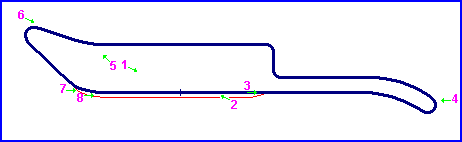
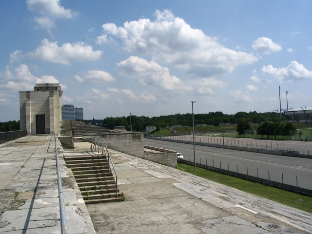
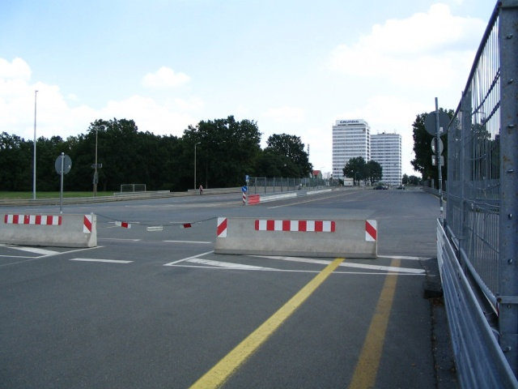
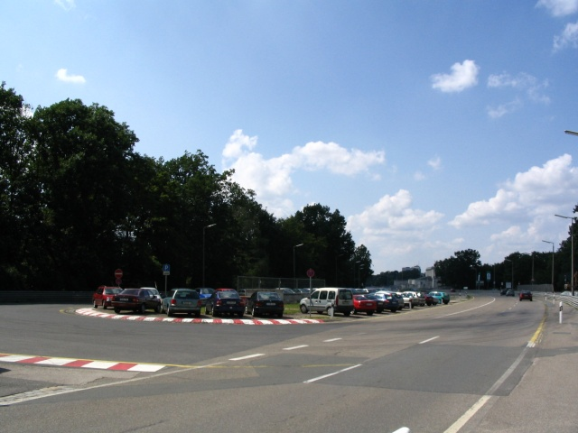
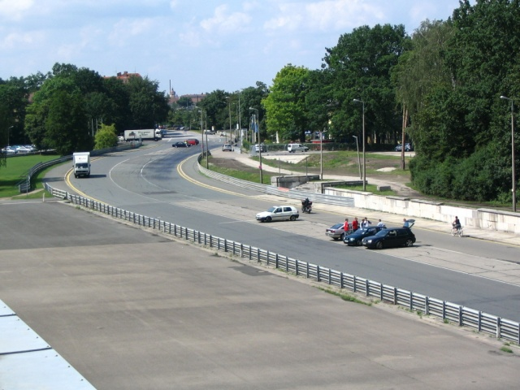
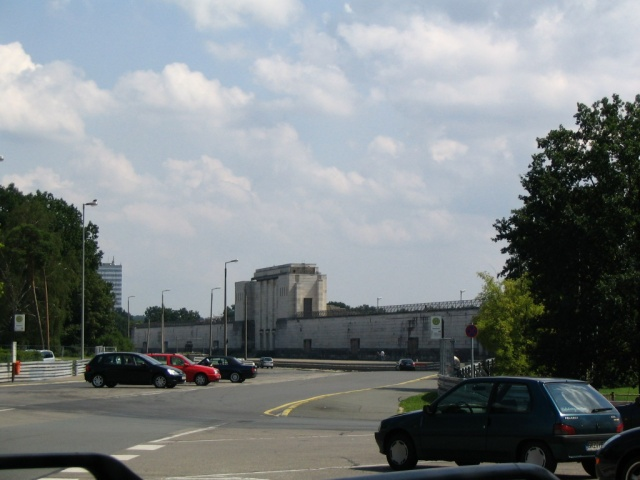
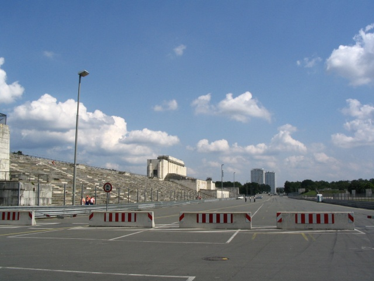

2. - Looking back down the circuit at the start/finish line.
Norisring, Germany
Type: Street Circuit
Length: 1.429 Miles / 2.300 km
Photographs Taken: 12 July 2004
This short street circuit is located in the south-eastern suburbs of Nürnburg. It is based on the roads surrounding the Steintribüne, a large structure opposite the Zeppelinfeld, from which Hitler would make speeches during the second world war. The 'Noris' part of the circuit name is derived from the Latin name for Nürnberg. The present layout is simply two kinked straights joined at either end by hairpins, with a 'S' bend on the back straight. Despite its short length, the roads are wide which helps to encourage overtaking. The first races were held in the late forties and throughout the fifties for motorcycles, with sportscar races later introduced successfully during the sixties. Pedro Rodriguez was killed during the 1971 race, and the circuit was consequently shortened the following year. In the ninties, touring cars replaced the sportcars for the feature race.

Numbers and arrows on map indicate the location and direction where the photographs
were taken.

1. - The view from the top of the
Steintribüne, looking down the start/finish straight towards the first turn.
2. - Looking back down the circuit at the
start/finish line.

3. - At the pitlane exit, looking down the
circuit towards the first hairpin

4. - The first hairpin

5. - The kink at the back of the circuit
before the second hairpin. Photo taken from the Steintribüne.

6. - Looking down the backstraight from the
second hairpin

7. - Exit of the final corner onto the
start/finish straight

8. - The start/finish straight
Return to racingcircuits.net's Photo Archive Main Index
see also: Norisring Photographs by Roelard Smit, August 2004
Photographs ©Michel Marti. Reproduced here with kind permission.